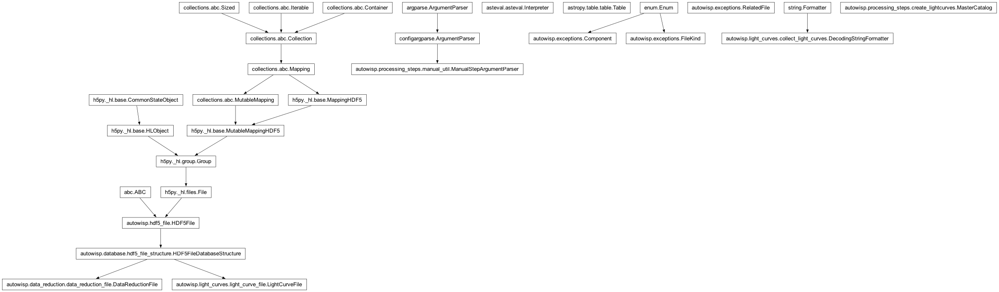

autowisp.processing_steps.create_lightcurves module
Class Inheritance Diagram

Create light curves from a collection of DR files.
- class autowisp.processing_steps.create_lightcurves.MasterCatalog(configuration)[source]
Bases:
objectClass for managing the master catalog for LC creation.
- add_batch(new_sources, new_header)[source]
Add any sources after a batch of newly created lightcurves.
This catalog as a
RelatedFile, with the fitting role.The resolved filename is known only here (the configured value is a header-substituted template), and the role depends on whether this run reads an existing catalog or writes a new one.
The lightcurve catalog and, if configured, its source-list filter.
- Parameters:
master_catalog (MasterCatalog) – Knows the resolved catalog filename and whether this run creates it.
configuration – The step configuration, holding the
lccatalog query settings.
- Returns:
The
RelatedFileentries known for the whole step.- Return type:
- autowisp.processing_steps.create_lightcurves.allowed_interrupted_status_values = (0, 1)
Unlike the steps that only ever record “started”, lightcurve creation adds the points (
0->1) before marking the DR files final, so an interrupted run can be found in either state.
- autowisp.processing_steps.create_lightcurves.allowed_start_status_values = (1,)
1means a previous run got as far as adding the points but not marking the DR files final, so it only needs finishing off.- Type:
On top of the always-allowed “nothing done yet”
- autowisp.processing_steps.create_lightcurves.cleanup_interrupted(interrupted, configuration)[source]
Cleanup the file system after interrupted lightcurve creation.
- autowisp.processing_steps.create_lightcurves.create_lightcurves(dr_collection, start_status, configuration, mark_start, mark_end)[source]
Create lightcurves from the data in the given DR files.
- autowisp.processing_steps.create_lightcurves.dummy_fname_parser(_)[source]
No extra keywords to add from filename.
- autowisp.processing_steps.create_lightcurves.get_observatory(header, configuration)[source]
Return (latitude, longitude, altitude) where given data was collected.
- autowisp.processing_steps.create_lightcurves.get_path_substitutions(configuration)[source]
Return the path substitutions for getting data out of DR files.
- autowisp.processing_steps.create_lightcurves.has_magfit(dr_fname, substitutions)[source]
Check if the DR file contains magnitude fitting data.
- autowisp.processing_steps.create_lightcurves.main()[source]
Run the light curve creation step from the command line.